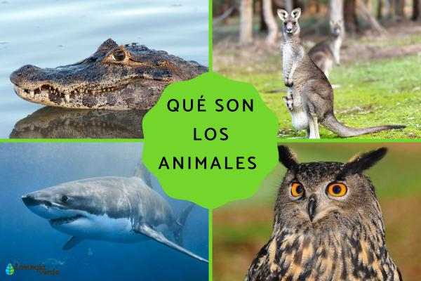
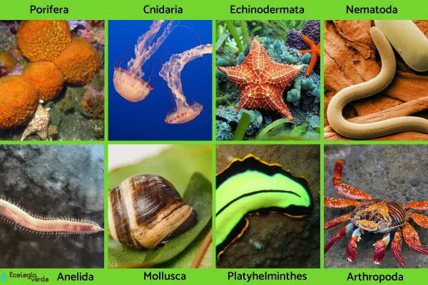
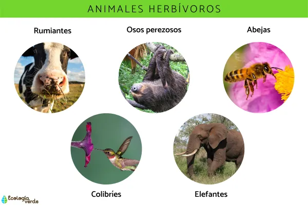
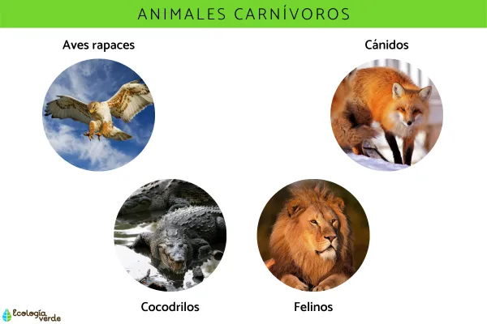
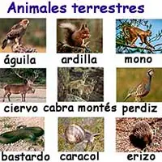
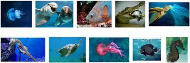
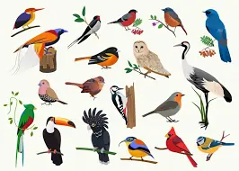

ANIMALES
¿Que son los animales?

El término animal es complicado de entender porque su definición científica dista de lo que hemos aprendido en la cotidianeidad. Se ha aprendido que los animales deben moverse, reaccionar y tener una estructura con torso y patas, pero hay animales que no cumplen con estas características. Entonces, ¿cuál es la definición científica de animal? En el siguiente artículo de EcologíaVerde te explicaremos al detalle qué son los animales, además de especificarte sus características y clasificaciones según su reproducción, su hábitat o alimentación, por ejemplo.
Características de los animales
Como vimos en la definición del término animal, estos tienen características complejas y particulares. A continuación de explicamos las características que permiten a las funciones vitales de los animales tener lugar.
Los animales son eucariotas: tienen un núcleo verdadero, en donde se empaca la información genética codificada en forma de ADN. Puedes encontrar la Diferencia entre célula eucariota y procariota en este otro post de EcologíaVerde que te recomendamos.
Son pluricelulares: con múltiples células que se organizan para construir tejidos especializados para llevar a cabo las diferentes funciones de los organismos. De igual modo, estas células se especializan.
Son heterótrofos: los animales no pueden sintetizar su propia energía, y por eso necesitan recibir fuentes externas en forma de alimento. A esto se le conoce como heterotrofia y se completa durante los procesos de nutrición.
Tienen una respiración aerobia: es decir que requieren oxígeno para el proceso de oxidación de algún sustrato y producir energía a partir de él.
Tienen particularidades morfológicas e incluso fisiológicas: hay animales en todos los medios, acuáticos, aéreos o terrestres, y en todo tipo de climas y ecosistemas.
Tienen un impulso activo: los animales tienen un impulso activo ante su entorno, que normalmente ocurre como mecanismo instintivo para alimentarse o evitar ser comido, es decir, para ejercer de depredador o presa.
Clasificación de los animales según su estructura vertebral
Los animales pueden tener, o no, una estructura de soporte. Esta es la primera categoría que separa en dos a los animales. A continuación, vamos a ver más detalladamente la clasificación de los animales según su estructura vertebral, o no.
Animales vertebrados:Los animales vertebrados tienen en su desarrollo embrionario la presencia de notocorda, un tipo de cordón neural, y se clasifican dentro del phylum Chordata. Dentro de la clasificación de animales vertebrados, esta notocorda puede:
Animales invertebrados:Este exoesqueleto es muy interesante en organismos como los artrópodos. Cuando necesitan aumentar de tamaño para transicionar al siguiente estadio de su desarrollo, mudan de su exoesqueleto mediante el proceso de ecdisis.

Clasificación de los animales según su alimentación
La siguiente clasificación de los animales depende de los alimentos que incluyen en su dieta. La alimentación de los animales es muy variada según la especie y puede ser carnívora, herbívora y omnívora. La alimentación no proviene de una relación filogenética.
Animales herbívoros:Los herbívoros se alimentan de plantas, que comprende un gran abanico de posibilidades. Pueden ser frugívoros, polinívoros, xilófagos, granívoros o folívoros. Los que se alimentan directamente de hojas o tallos tienen la capacidad de degradar la celulosa, un componente que suele ser muy duro.

Animales carnívoros:Los animales carnívoros se alimentan únicamente de otros animales. Pueden ser depredadores activos o carroñeros. Como antagonista de los herbívoros, este grupo tampoco es de origen filogenético.

Animales omnívoros:La última clasificación de los animales según su alimentación se basa en todos aquellos que comen tanto a otros animales como a plantas. Esto les ayuda a ser más flexibles, una característica muy útil, por ejemplo, en animales principalmente carnívoros pero que carecen de opciones momentáneamente.

Clasificación de los animales según su hábitat
La siguiente clasificación de los animales es según se hábitat. En este aspecto, podemos encontrarnos con animales terrestres, animales acuáticos y animales aeroterrestres. Vamos a verlos más detalladamente.
Animales terrestres:Los animales que se encuentran sobre el suelo o en estructuras asociadas a él como árboles se clasifican como animales terrestres.

Animales acuáticos:Estos animales dependen del agua, principalmente por su respiración branquial o por ser organismos filtradores. Ejemplo de estos últimos son las esponjas marinas. Ellas utilizan un sistema para circular el agua dentro y fuera de ellas con células llamadas coanocitos. Con esto atraen a sí partículas de plancton, con microorganismos y algas.

Animales aeroterrestres:Estos animales tienen la capacidad de volar, pero solo momentáneamente pues implica mucho gasto energético. Por eso dependen del hábitat terrestre. Ejemplo de esto son las aves e insectos.
